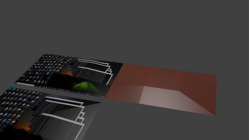

BRADD WIKI
BRADD - Blender to Radiance Direct - a flavour/variant/permutation/derivative of BRAD exporter, featuring exporting geometry directly from Blender to Radiance (physically based rendering engine) .rad format, including converting Blender ordinary render materials to closest Radiance material types, and converting Sphere, Cylinder, Cone to sphere, cylinder, cone (w/wo ring endcaps), Circle to ring, and Text to mixtext (with void backgorund), and automatically generating shell scripts.
Related:
- BRAD: exports from blender to an intermediate .obj format, and then to radiance .rad via radiance obj2rad conversion program
- LiVi: part of VI-Suite installs radiance material panels, uses advanced radiance capabilities
Goal for BRADD: something that's easy for those familiar with Blender to give Radiance rendering a quick try.
- install Radiance
- install BRADD exporter in Blender > User Preferences > Add Ons > Install Add On from File and pick our .py exporter
- File Export > Export BRADD Radiance Folder
- in the output folder, run batch files run1 run2 run3 run4
- open the scene.bmp image to see what got rendered
Download BRADD addon for Blender: io_export_radiance_bradd27_blend279.py
Download example blender scenes: bradd_examples/
| Blender | Radiance |
 |
|
|  | |
Conversion details for BRADD method:
| Blender | Radiance |
| Geometry: | |
| Cone | cone |
| Cylinder | cylinder |
| Sphere (UV, ICO) | sphere |
| Circle | ring |
| - end caps for above | ring |
| - radius, depth for above | radius, depth for above |
| artist edited Cone, Cylinder, Sphere, Circle | (not handled properly, please rename data block to 'Mesh.0xx' so exported as polygons) |
| Grid | polgon (triangles) |
| Text | mixtext on rectangle polygon; background void |
| Plane, Cube, Mesh ... | polygon (separate .rad file for each Mesh) |
| Objects and Transforms: | |
| Object | !xform in scene.rad |
| -translation | -tx -ty -tz |
| -rotation | -rx -ry -rz |
| -scale | -s SX only applied, assumes iso-tropic (if an-isotropic scale, please Object > Apply > Scale before export |
| nested hierarchy | transform combined |
| instanced object | /geom .rad written once, used with many !xform in scene.rad |
| Materials: | |
| Material | material written once in materials.mat, used in many /geom .rad |
| Texture | only ImageTexture, and only for Plane and Grid, image exported to images/*.hdr, default OBJECT mapping |
| UV Texture coords | (xyz,uv) bary2bary/perspective converted to closest similarty transform |
| Lights: | |
| Point | light + .33 sphere |
| Spot | spotlight + .33 ring |
| Area | arealight + rectangle polygon |
| (Hemi) | (x not handled) |
| Sun | standard sun via light |
| - Sky (Sun option) | standard sky via skyfunc |
| (x not handled) | (illum) |
| Viewpoint: | |
| Camera | Camera.vf |
| Commandline: | |
| run1.bat/.sh | oconv |
| run2.bat/.sh | rvu |
| run3.bat/.sh | pview |
| run4.bat/.sh | ra_bmp |
| (x not handled) | rad .rif |